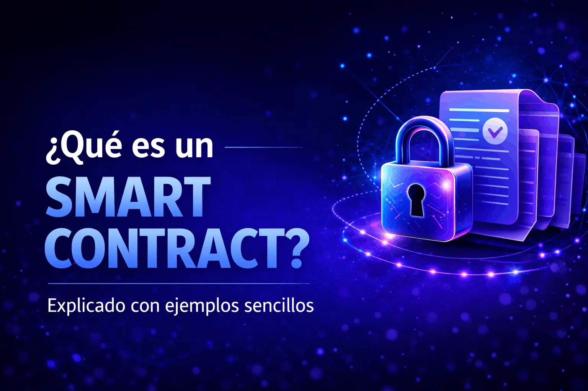

¿Qué son y por qué importan?

Es un programa auto-ejecutable almacenado en una cadena de bloques que realiza acciones automáticamente cuando se cumplen condiciones acordadas.
Imagina un contrato tradicional, pero en lugar de depender de abogados y tribunales para hacerlo cumplir, el código se ejecuta automáticamente cuando se cumplen las condiciones programadas.
Clave: "Si ocurre X, entonces ejecuta Y" — sin intermediarios, sin demoras, sin posibilidad de no cumplir.
Una máquina expendedora es el mejor ejemplo
¿Sin intervención humana? Exactamente — nadie necesita aprobar tu compra, contar el cambio o entregar la bebida. La máquina ejecuta todo automáticamente.
Un smart contract hace lo mismo pero en la blockchain: verifica condiciones y ejecuta acciones automáticamente, sin necesidad de confiar en una persona o entidad central.
Tres pasos simples del proceso
Un programador define las reglas "si/entonces" en código. Ejemplo: "Si recibo 1 ETH, entonces transfiero el NFT".
El contrato se sube a la red blockchain donde permanece inmutable y accesible para todos.
El contrato espera eventos (pagos, fechas, resultados). Cuando se cumplen las condiciones, ejecuta la acción automáticamente.
Importante: Una vez desplegado, el código no puede cambiarse. Esto garantiza que nadie puede modificar las reglas a mitad de camino.
Casos de uso del mundo real
"Si el paquete llega a su destino, entonces libera el pago al vendedor automáticamente."
"Si recibes 1 ETH en la dirección del contrato, entonces transfiere automáticamente la propiedad del NFT."
"Si el vuelo se retrasa más de 3 horas, entonces paga automáticamente la compensación al pasajero."
Patrón común: Todos siguen la lógica condición → verificación → ejecución automática.
Por qué están revolucionando los acuerdos
Las acciones se ejecutan instantáneamente cuando se cumplen las condiciones. Menos intermediarios = menos costos y demoras.
Todo el código y las transacciones son públicos y verificables por cualquiera. No hay cláusulas ocultas.
Una vez escrito en la blockchain, no se puede borrar ni alterar. El historial permanece para siempre.
No necesitas confiar en una persona — solo en el código matemáticamente verificable que ejecuta lo acordado.
Resultado: Acuerdos más rápidos, baratos, seguros y justos para todas las partes.
Visualización del proceso completo
Envía la criptomoneda requerida e invoca la función del contrato (ej: "comprar NFT").
Revisa automáticamente: ¿Se recibió el pago correcto? ¿El NFT está disponible? ¿Cumple todas las reglas?
Si todo es válido, transfiere el NFT al comprador y el pago al vendedor — todo en una sola transacción atómica.
Este flujo automatizado elimina intermediarios y garantiza que las reglas se cumplan exactamente como fueron programadas.
Se pueden programar las condiciones que se quieran
Ejemplo con Bitcoin: Cuando una persona quiere comprar 1 BTC, simplemente oprime un botón y si tiene el saldo suficiente, se le transfiere su BTC a su wallet y al mismo tiempo se le debita la moneda con la que lo compró (USDT, USDC, etc.).
Todo ocurre automáticamente en una sola transacción atómica. Si no hay saldo, la transacción simplemente no se ejecuta.
"Cómo llega un token RWA a la wallet del comprador con cliff y vesting"
Importante: No siempre el comprador recibe todo de golpe. Muchas veces recibe un derecho a recibir tokens según una agenda de desbloqueo programada.
Realizas el pago completo al momento de la compra.
Tu asignación queda guardada en la blockchain con tus condiciones específicas.
Según el calendario de cliff y vesting, recibes tus tokens gradualmente.
Del pago al desbloqueo final, paso a paso
El comprador paga → se confirma la compra → se asigna un saldo bloqueado → corre el cliff → empieza el vesting → el comprador reclama o recibe los tokens → quedan completamente liberados.
El smart contract automatiza esa liberación siguiendo reglas predefinidas que no pueden alterarse.
¿Qué existe antes de que veas tokens en tu wallet?
El token ya ha sido creado y desplegado en la blockchain con sus reglas establecidas.
Un registro que determina cuántos tokens le corresponden a cada dirección de wallet.
Sabe exactamente cuántos tokens le tocan a cada comprador y cuándo puede liberarlos.
En proyectos RWA (Real World Assets), el valor del token depende de activos, contratos y controles fuera de la cadena, pero la distribución del token se ejecuta en blockchain de forma transparente e inmutable.
Compra ≠ Entrega inmediata (cuando hay vesting)
Realiza el pago a la dirección de venta o plataforma del proyecto.
Un registro interno u on-chain marca: "Tú tienes derecho a X tokens" — pero no los libera aún.
El contrato verifica: ¿Wallet en whitelist? ¿KYC completado? ¿Cumple condiciones previas?
Importante: La compra y la entrega del token no siempre ocurren al mismo tiempo. A veces hay semanas o meses de diferencia.
La etapa de bloqueo inicial
El cliff es un período de espera al inicio donde no se libera nada. Es como una "cuarentena" obligatoria antes de que empiece cualquier liberación.
Compras 1,000 tokens. Asignación registrada en el contrato.
🔒 BloqueadoLa asignación existe, pero no puedes retirar ni recibir tokens.
⏳ Esperando¡Empiezan las liberaciones según el calendario de vesting!
✅ LiberandoEl botón de "claim" suele estar deshabilitado durante el cliff o devuelve cero tokens disponibles.
¿Qué pasa cuando se cumple el tiempo de bloqueo?
Compara el timestamp actual con la fecha de inicio + duración del cliff.
En muchos modelos, al terminar el cliff se desbloquea un % inicial (ej: 10%) inmediatamente.
El resto se libera poco a poco, por ejemplo cada mes, hasta completar el 100%.
0 tokens disponibles
Primera porción liberada
Más tokens cada mes
100% liberado
El calendario que libera tokens gradualmente
El vesting es el calendario que decide cuánto token se libera en cada momento. No "crea" tokens nuevos — solo libera los que ya estaban reservados para esa wallet.
1,000 tokens
3 meses
9 meses
Resultado: Durante 3 meses no se libera nada. Después, el contrato libera ~111 tokens por mes durante 9 meses hasta completar los 1,000.
Los dos modelos de distribución
El comprador conecta su wallet y presiona "reclamar". El contrato verifica cuánto puede liberar y transfiere los tokens a su dirección.
El sistema o un bot ejecuta la liberación automáticamente y envía los tokens a la wallet según el calendario programado.
En ambos casos, la wallet solo recibe tokens cuando el contrato confirma que ya se cumplieron las reglas de tiempo y asignación.
Validaciones antes de soltar tokens
Verifica que la dirección que reclama está en la lista de asignaciones.
Consulta la cantidad total que le corresponde a esa dirección.
Comprueba si el período de bloqueo inicial ha finalizado.
Calcula basándose en el tiempo transcurrido y el calendario de vesting.
Verifica el histórico para no duplicar liberaciones.
Determina el saldo pendiente para futuras liberaciones.
Los smart contracts automatizan toda esta lógica con reglas programadas previamente que se ejecutan de forma determinista e inmutable.
10 tokens KIMEN con cliff de 6 meses y vesting de 20 meses